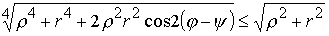
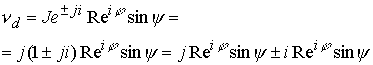
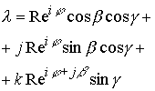
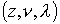
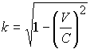

|
В. И. ЕЛИСЕЕВ ВВЕДЕНИЕ В МЕТОДЫ ТЕОРИИ
ФУНКЦИЙ ПРОСТРАНСТВЕННОГО КОМПЛЕКСНОГО ПЕРЕМЕННОГО |
|
10.15. (Продолжение 2 из 2) СТРУКТУРА КОМПЛЕКСНОГО ПРОСТРАНСТВА.
Делить на делители нуля нельзя, так же как делить на ноль. Однако делители нуля имеют обратные элементы как и ноль в числовом поле.
Свойство нуля  , для делителей нуля не выполняется
, для делителей нуля не выполняется
Произведение для делителей нуля выполняется в форме , произведение дает новый делитель.
Важным свойством комплексного пространства является выполнение соотношения
или
|
 |
(10.15.21) |
Все точки пространства, формула которого выражается действительными параметрами, имеют модуль больше по величине, чем пространство формула которого содержит комплексный аргумент.
Сингулярность типа не имеет ничего общего с сингулярностью, выраженной наличием в пространстве точек с изолированным аргументом .Первая сингулярность есть ошибка в решении, которая может быть устранена изменением математических допущений, связанных с физическим аспектом решаемой задачи.
Сингулярность аргумента отражает свойства реального пространства быть заряженным. Соответствие между зарядом и подпространством делителей нуля подробно будет исследовано и отождествлено в дальнейшем.
Геометрически сингулярность аргумента означает разложение структуры точки на две не суммируемые пространственные координаты
, которые в пространстве имеют мнимую точку.
Свойства делителей нуля позволяют выделить подпространство делителей нуля из общего комплексного пространства следующей операцией
|
(10.15.22) |
В дальнейшем введем символические обозначения , поэтому будем иметь
|
(10.15.23) |
Таким образом, поверхность комплексной сферы ограничивает два пространства: комплексное в смысле Коши, которое будем называть ядром, и подпространство делителей нуля
|
 |
(10.15.24) |
Которое будем называть заряженным подпространством ..
Комплексное пространство  расширим до пространства
расширим до пространства  , в котором точка будет определяться выражением
, в котором точка будет определяться выражением
|
(10.15.25) |
принадлежат пространству  , где в общем виде (10.15.6), .Так что, пространство
, где в общем виде (10.15.6), .Так что, пространство  включает вложенное пространство
включает вложенное пространство , которое в свою очередь включает пространство в виде
, которое в свою очередь включает пространство в виде  . Соблюдаются законы алгебр действительных и комплексных чисел, что дает возможность записать комплекс (10.15.25) в виде
. Соблюдаются законы алгебр действительных и комплексных чисел, что дает возможность записать комплекс (10.15.25) в виде
|
(10.15.26) |
R-действительный модуль, определяется применением формулы Коши трижды к комплексу (10.15.25), представляет корень восьмой степени из многочлена все члены которого в комбинации параметром дают восьмую степень их произведения (из –за громоздкости выражения не приводится
)аргумент -действительный,  -комплексный из (z),
-комплексный из (z),  -комплексный из
-комплексный из 
Исследование геометрии комплекса проведем в традиционном пространстве из трех координат. Запишем комплекс (10.15.26) как сумму
|
 |
(10.15.27) |
В дальнейшем можно ввести обозначения
|
(10.15.27а) |
Две координатные оси есть комплексное пространство  , совместно они дают плоскость – пространство из сфер
, совместно они дают плоскость – пространство из сфер  . Третья ось есть комплексная линия из сфер
. Третья ось есть комплексная линия из сфер 
Стандартные понятия точки, линии, плоскости, поверхности наполняются новым содержанием. Циклонная кривая заполнена -сферами из пространства  . Циклонная кривая в каждой точке окружена циклонной кривой
. Циклонная кривая в каждой точке окружена циклонной кривой  . Циклическая периодичность аргумента пространства
. Циклическая периодичность аргумента пространства  выражается комплексом
выражается комплексом
Интегральные теоремы связности пространства выражаются в виде
Выполнение этих теорем есть следствие реализации в пространстве интегральных теорем Коши, Стокса, Грина, Остроградского.
Интегральные теоремы Коши в пространствахустанавливают связь между границей области, заданной в виде замкнутой кривой типа , либо в виде поверхности , либо объема  .и значением функции в любой точке области, находящейся внутри этих кривых, поверхностей, объемов. Основным условием для реализации этих теорем является условие аналитичности функций. Это условие выделяет пространственную точку как область внутри поверхности, натянутой на циклонную кривую, которая одновременно выступает как особая точка в пространстве любого числа измерений.
.и значением функции в любой точке области, находящейся внутри этих кривых, поверхностей, объемов. Основным условием для реализации этих теорем является условие аналитичности функций. Это условие выделяет пространственную точку как область внутри поверхности, натянутой на циклонную кривую, которая одновременно выступает как особая точка в пространстве любого числа измерений.
С ростом размерности пространства увеличивается количество сингулярных направлений, которые определяют рост вложенных друг в друга изолированных  -туннелей разных свойств. Количество вложенных туннелей меньшей размерности в туннели более высокой размерности находится в соответствии с количественной величиной размерности пространства и является важной характеристикой структуры вложенных пространств.
-туннелей разных свойств. Количество вложенных туннелей меньшей размерности в туннели более высокой размерности находится в соответствии с количественной величиной размерности пространства и является важной характеристикой структуры вложенных пространств.
Рассмотрим структуру комплекса (10.15.26) с позиций заряженных подпространств. Произведем операцию по выделению заряженного подпространства
|
|
(10.15.27б) |

Получили комплекс с ядром, принадлежащим пространству  и заряженным подпространством (использована символическая запись сингулярного направления
и заряженным подпространством (использована символическая запись сингулярного направления
Ядро комплекса позволяет выделить заряженное подпространство изолированного аргумента
В зарядовом подпространстве также произведем выделение зарядового подпространства с изолированным аргументом
.в соответствии с формулой (10.15.23). В итоге будем иметь
|
(10.15.27в) |
Таким образом, комплекс (10.15.27в) помимо заряженных подпространств с изолированными аргументами имеет подпространство смешенного заряда
.Необходимо отметить, что рассмотрен один из вариантов выделения зарядовых подпространств с целью демонстрации необходимых алгебраических операций и упрощения для дальнейшего изложения терминологии.
Рассмотрим комплекс (10.15.26) в виде
В данном выражении параметры все действительны, причем модуль комплекса с действительными аргументами больше модуля для всех остальных возможных значений
|
(10.15.28) |
Дальнейшее увеличение размерности пространства происходит по уже известной схеме
|
(10.15.29) |
Пространственный комплекс получит вид
|
(10.15.30) |
()
В трех взаимно перпендикулярных координатах комплекс будет представлять сумму
|
(10.15.31) |
Введем координаты
|
(10.15.31а) |
Формулы (10.15.12, 10.15.27, 10.15.31) дают представление, как с ростом размерности меняется формула и понятия о точке в реальном пространстве. В пространстве  точка это сфера, а ее проекции действительные линии, в пространстве
точка это сфера, а ее проекции действительные линии, в пространстве  координатные линии это комплексные цилиндры, в пространстве цилиндрические координатные линии заполнены сферами и т.д.
координатные линии это комплексные цилиндры, в пространстве цилиндрические координатные линии заполнены сферами и т.д.
Раскроем формулу комплекса (10.15.29) введя в нее пространство как комплексное пространство по формуле (10.15.25), получим
Далее можно ввести представление пространства . В результате получим
|
(10.15.32) |
Таким образом, рост размерности пространства характеризуется структурой вложенных друг в друга пространств, где минимальное по размерности комплексное пространство Коши является элементарной ячейкой.
Точка в пространстве не является набором значений координат, а соответствует сложному структурному образованию.
Выделим в пространстве заряженное подпространство. В соответствии с формулой (10.15.30) имеем
Вводя условные обозначения, получим окончательно
|
(10.15.33) |
Сопоставляя формулы (10.15.22), (10.15.27а) с полученной формулой, имеем полное их соответствие по операциям выделения заряженных подпространств разного уровня размерности.
В комплексе (10.15.33) можно продолжить выделении заряженных подпространств следующего уровня, для этого достаточно воспользоваться формулой (10.15.27в).
Детализация формулы (10.15.33) будет произведена при исследовании описания частиц микромира.
Релятивистская механика Пуанкаре
Формулы релятивистской механики Пуанкаре преобразуются в комплексном пространстве и приводят к новым физическим выводам.
Четырех вектор скорости записывается в координатном виде
|
(10.15.34) |
В комплексном пространстве составляющие скорости объединены
|
(10.15.35) |
Матричная запись по формуле (10.15.34) есть результат отсутствия математического описания пространства на языке числового поля. Формула (10.15.35) дает описание скорости как проекции модуля скорости взаимодействия С под комплексном углом
.Формула показывает, что с какой бы скоростью V не двигался объект, волна от него будет распространяться со скоростью взаимодействия С, которая будет раскладываться на координаты комплексного пространства.
Если имеем предельный случай  , то
, то
Движение переходит в изолированное направление, а волна взаимодействия будет проходить по мнимым точкам пространства с бесконечной скоростью, ограниченной конечной скоростью С. Это диктуется законом соблюдения числовых операций в комплексном пространстве.
В релятивисткой механике Пуанкаре имеем также:
|
Импульс ,энергия или |
(10.15.36) |
В комплексном пространстве энергия-импульс запишутся в виде
|
(10.15.37) |
Вновь вместо записи (10.15.36) в несуществующем пространстве имеем запись энергии – импульса для реального пространства (10.15.37), соответствующую числовому полю и операциям в нем.
Равенство модулей комплексов дает известные выражения

Импульс является характеристической величиной частицы и выражается модулем комплекса , который проектируется на координаты в зависимости от отношения скоростей
.Энергия в комплексном пространстве выразится как произведение скорости на импульс . Используя формулы (10.15.35), (10.15.37), получим
|
(10.15.38) |
Можно провести преобразования по законам комплексной алгебры, получить выражение
|
, где аргумент |
(10.15.39) |
Если  , то имеем
, то имеем
|
(10.15.40) |
Модуль энергии равен при любом значении скорости.
В релятивистской механике масса увеличивается с увеличением скорости. Это утверждение справедливо только для выражения энергии по формулам (10.15.36), которые выведены для не реального пространства. В комплексном числовом пространстве, которое соответствует реальному пространству, масса не изменяется при изменении скорости. Масса частицы в результате не может стать бесконечно большой при достижении скорости передачи взаимодействия С.
Комплексное пространство представляет единство двух подпространств: подпространство точек с действительным модулем и подпространство мнимых точек с модулем равным корню из нуля. Такое разделение пространства находится в соответствии с преобразованиями Лоренца. Точки светового конуса есть мнимые точки, которые образованы двумя не суммируемыми значениями взаимно перпендикулярных координат. Однако до настоящего времени ввиду отсутствия математического аппарата, а вернее сказать ввиду ошибочного математического аппарата, применяемого в ОТО, СТО, РТГ, этот момент остается не обнаруженным. Использования интервала как модуля расстояния между точками без учета аргументов значений координат в пространстве N>3 приводит к ошибочным выводам при исследовании структуры пространства.
В реальном пространстве нельзя выделить изолированное пространство, которое не содержало в себе подпространство точек более высокой размерности, чем это выделенное изолированное. Такая абстракция не соответствует действительности даже в крайнем физически нереальном случае, когда представляют точку, окруженную пустотой. Пустота совместно с этой абстрактной точкой вновь даст структуру большего измерения.
Подпространство мнимых точек отождествляется с фундаментальным свойством реального пространство быть заряженным. Одновременно с этим подпространство мнимых точек выступает как полевое пространство взаимодействия.
Таким образом, Лоренц своими преобразованиями открыл самое существенное в структуре реального пространства, которое заключается не в абсолютном численном значении скорости света, которой придается такое большое значение, а в разложении пространства большей размерности на подпространства меньшей по величине размерности. В этом смысл преобразований Лоренца.
Опыт Майкельсона является прямым доказательством того, что реальное пространство является комплексным пространством. До настоящего времени исследователи и теоретики допускают грубую ошибку в попытке объяснить или опровергнуть опыт Майкельсона и последующие за ним опыты, складывая или вычитая движение среды со скоростью со скоростью света С.
В реальном пространстве равенство не соответствует действительности. Эта грубая теоретическая ошибка не может лежать в основе объяснения результатов экспериментов. Скорость света характеризует движение полевой массы по изолированному направлению и находится в пространстве другого измерения, чем скорость прибора или среды 
С учетом комплексности пространства и особого положения в нем скорости света С, как скорости передачи взаимодействия, скорость выражается как комплекс
|
(10.15.41) |
Гениальность преобразований Лоренца заключается в установлении коэффициента , который характеризует динамику комплексного пространства. При вращении прибора комплексная скорость будет равна
Если прибор настроен так, что знаки перед углом  перемешиваются знаками временного угла , то следует в опыте ожидать интерференционных полос.
перемешиваются знаками временного угла , то следует в опыте ожидать интерференционных полос.
Таким образом, механика Пуанкаре соответствует комплексной математике, как математике вложенных пространств.
Мини оглавление:
[0], [1.1.1, 1.1.2, 1.1.3, 1.1.4, 1.1.5, 1.1.6, 1.1.7, 1.1.8, 1.2, 1.2.1, 1.2.2, 1.2.2.a, 1.2.2.b, 1.2.2.c, 1.2.2.d, 1.2.2.e, 1.2.2.f, 1.2.2.g, 1.2.2.h, 1.2.3, 1.3.1, 1.3.2, 1.3.3, 1.3.4, 1.3.5, 1.3.6, 1.4.1, 1.4.2, 1.5, 1.6, 1.7.1, 1.7.2, 1.7.3.1, 1.7.3.2, 1.7.3.3, 1.7.4.1, 1.7.4.2, 1.8.1], [2.1, 2.2],[3.1, 3.2, 3.3, 3.4.1, 3.4.2, 3.4.3, 3.4.4, 3.4.5],[4.1, 4.2, 4.3, 4.4],[5.1, 5.1.Рис.52, 5.2, 5.3, 5.4, 5.4.Т1, 5.4.Т2, 5.4.Т3, 5.5.1, 5.5.2, 5.5.3, 5.5.4],[6.1.1, 6.1.2, 6.2.1, 6.2.2, 6.2.3, 6.2.4, 6.2.5, 6.3, 6.4.1, 6.4.2, 6.5.1, 6.5.2],[7.1, 7.2, 7.3, 7.4, 7.5, 7.6, 7.7.1, 7.7.2, 7.8.1, 7.8.2, 7.8.3, 7.9],[8.1, 8.2.1, 8.2.2, 8.3, 8.4, 8.5, 8.6, 8.6.T1, 8.7, 8.8.1, 8.8.2, 8.8.3, 8.9.1, 8.9.2, 8.9.3, 8.10, 8.10.T2, 8.10.T3],[9.1, 9.2, 9.3, Рис.88, 89, 90, 91, 92, 93, 94, 95, 96, 97, 98, 99, 100],[10.1, 10.2, 10.3, 10.4, 10.5, 10.6, 10.7, 10.8, 10.9, 10.10, 10.11, 10.12, 10.13, 10.14, 10.15.1, 10.15.2, 10.16.1, 10.16.2, 10.17, 10.18],[11]
Размещенный материал является электронной версией книги: © В.И.Елисеев, "Введение в методы теории функций пространственного комплексного переменного", изданной Центром научно-технического творчества молодежи Алгоритм. - М.:, НИАТ. - 1990. Шифр Д7-90/83308. в каталоге Государственной публичной научно-технической библиотеки. Сайт действует с 10 августа 1998.
E-mail: mathsru@gmail.com